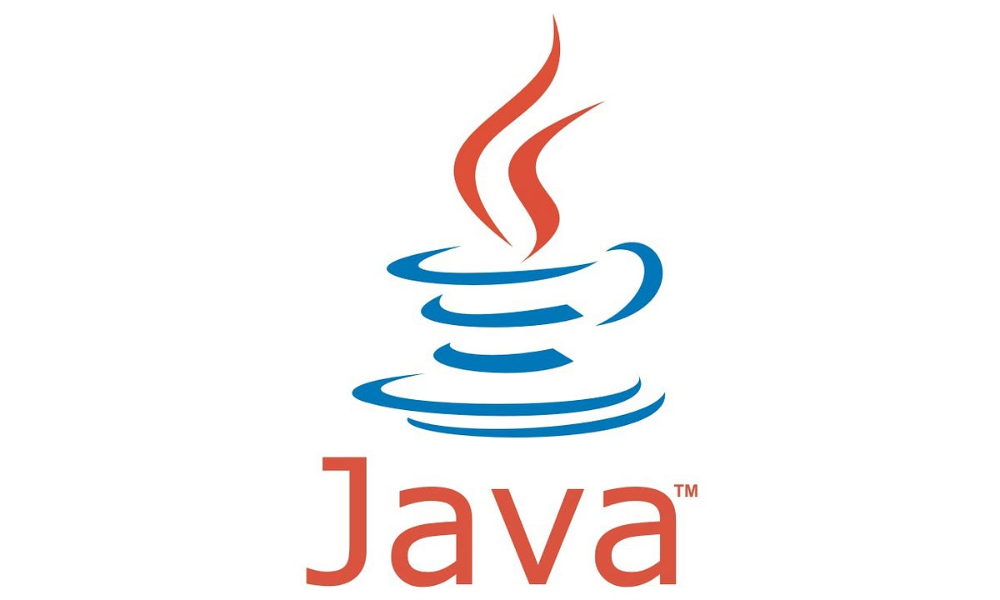

Oscar Daniel Villegas Martinez
Ultima actualización Septiembre 29, 2023
1.
Python
Python.org
Python es uno de los lenguajes de programación más usados actualmente
y la tendencia sigue al alza. Lo tiene todo: es de código abierto, una
sintaxis sencilla y fácil de entender, por lo que ahorra tiempo y
recursos. Es uno de los mejores para iniciarse en el mundo de la
programación. Python es un lenguaje versátil que puede tener múltiples
aplicaciones. Una de ellas, la Inteligencia Artificial, gracias a
bibliotecas como Keras o TensorFlow. También puede ser de utilidad
para aplicaciones de Big Data, gracias a bibliotecas de procesamiento
de datos. Este lenguaje de programación también se emplea en el
desarrollo web, sobre todo, gracias a sus frameworks Django o Flask.
Por poner algunos ejemplos, los sitios web de SemRush o Reddit están
desarrollados con Python.

2.
Java
Java.com
Java es un lenguaje de programación de propósito general, orientado a
objetos y diseñado para tener las dependencias de implementación
mínimas posibles. Con este lenguaje de programación se pueden crear
aplicaciones y procesos en múltiples dispositivos. Su ámbito de
aplicación es amplísimo, por lo que permite crear software para
dispositivos móviles, terminales de venta, cajeros automáticos, IoT
(internet de las cosas), además de páginas web. Java fue el lenguaje
por defecto para desarrollar aplicaciones para Android y, aunque
Kotlin está ganando enteros día a día, Java sigue siendo muy
necesario. Respecto a los juegos móviles, los primeros estaban
desarrollados con Java. Hoy en día, Java sigue teniendo un papel
importante en el mundo de los videojuegos, gracias a frameworks como
JMonkeyEngine o Ardor 3D.

3.
JavaScript
JavaScript documentation
JavaScript es un lenguaje de programación interpretado, orientado a
objetos y que se utiliza principalmente en la forma del lado del
cliente. Este lenguaje de programación sirve para todo: aplicaciones
web, servidores, aplicaciones móviles… Su peculiaridad es que no
necesita compilación ninguna, ya que es el propio navegador quién lee
el código y realiza las acciones que le indica. Por este motivo, es
uno de los lenguajes para crear páginas web cuando se quieren plantear
elementos interactivos o más visuales. Sin embargo, gracias a las
prestaciones de HTML5 y las librerías de gráficos 2D y 3D, Javascript
tiene también un papel relevante para el desarrollo de videojuegos,
especialmente, si éste se ejecuta desde el navegador.

4.
C#
C# documentation
C# es un lenguaje que sigue apareciendo en los listados de lenguajes
de programación más usados. Creado por Microsoft, está presente en
entornos empresariales, como instituciones gubernamentales, entidades
bancarias o médicas. Aunque más allá de este tipo de aplicaciones,
tiene también usos muy versátiles: internet de las cosas, desarrollo
de videojuegos, web o aplicaciones móviles. Para el desarrollo web,
puedes utilizar el framework ASP.NET o la herramienta Xamarin para
desarrollar aplicaciones nativas para Android e iOS. Pero si lo tuyo
son los videojuegos, C# es el lenguaje que debes dominar. Y es que una
de las herramientas más potentes hoy en día como es Unity soporta
varios lenguajes de forma nativa. Uno de ellos es C#.

5.
PHP
PHP.net
PHP es un lenguaje de programación de propósito general de código del
lado del servidor. Este lenguaje garantiza una buena comunicación
entre web y servidor, por lo que las páginas web desarrolladas con
este lenguaje son estables y con buen rendimiento. Actualmente, muchas
páginas web están diseñadas con WordPress, que trabaja con PHP. Por
ello, este lenguaje te permitirá desarrollar tanto proyectos como
plugins para esta plataforma.

6.
C/C++
C/C++ information
C++ es un lenguaje de programación surgido como extensión del lenguaje
C para que pudiese manipular objetos. Ambos lenguajes de programación
siguen siendo utilizados en la actualidad en bases de datos,
navegadores web, compiladores o videojuegos.